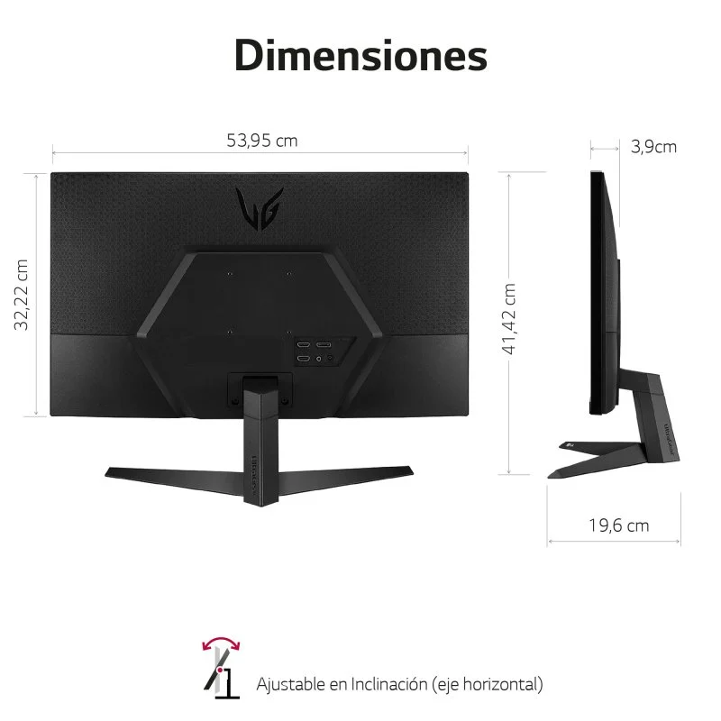

LG Ultragear 24GQ50F-B 23.8" LED FullHD 165Hz FreeSync Premium

Especificaciones
Tasa de Refresco de 165Hz: Juega más fluido con frecuencia de actualización de 165Hz.
1ms Motion Blur Reduction:1ms de velocidad de respuesta
AMD Freesync Premium:AMD FreeSync™ Premium para disfrutar de toda la acción sin parpadeos, incluso a bajas tasas de refresco gracias al LFC (Low FrameRate Compensation)
Panel VA de 3000:1: Ratio de contraste de color 3000:1 gracias al panel VA
Estabilizador de Negros (Tecnología Black Stabilizer): Estabilizador de Negros que permite colores oscuros más diferenciados